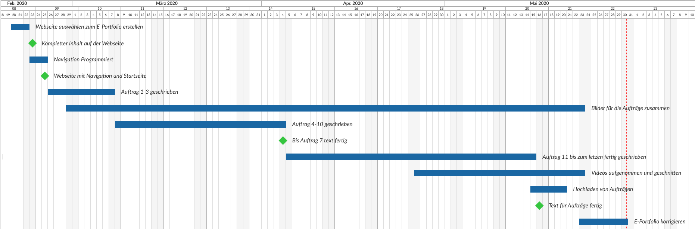

E-Portfolio Plan erstellt mit Gantt-Diagramm
Wie lief es das Gantt-Diagramm zu erstellen?
Um ein Gantt-Diagramm überhaupt erstellen zu können, musste ich mir überlegen, was ich alles brauche und was meine Meilensteine beim E-Portfolio sein sollen. Damit ich etwas mehr Flexibilität habe, nahm ich die Aufträge zusammen, damit ich trotzdem selbst noch entscheiden kann, wann ich mir mehr Zeit für das E-Portfolio nehme. Es ist schwierig einzuschätzen wie viel Zeit ein Auftrag beansprucht. Bis jetzt habe ich noch nie ein Gantt Diagramm erstellt. Ausserdem wollte ich eine Webseite, mit der ich direkt Online ein Gantt Diagramm erstellen kann. Ich denke es ist eine sehr gute Idee, so ein Projekt zu planen, um im späteren Zeitpunkt nicht im Stress zu sein, oder etwas Wichtiges vergessen zu haben. Das Erstellen von einem Gantt Diagramm ist sehr einfach, vor allem konnte ich mit Open Project direkt Arbeitspakete erstellen und das Datum festlegen, so dass dieses Gantt Diagramm automatisch erstellt wurde.